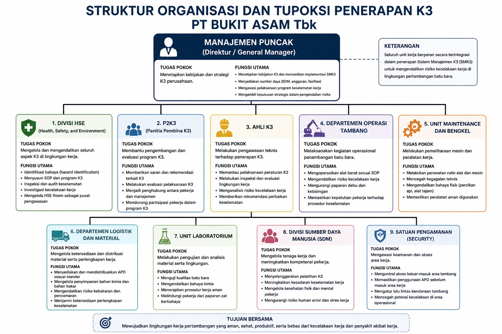

KEUTAMAAN KESELAMATAN.
Kesehatan, Keselamatan Kerja & Lingkungan Hidup
HSE bukan sekadar departemen, melainkan Way of Life di PT Bukit Asam Tbk. Filosofi kami berakar pada perlindungan aset paling berharga perusahaan: nyawa dan kesejahteraan manusia.
Zero Harm Policy
Menghilangkan seluruh potensi bahaya melalui identifikasi risiko dini, investigasi near miss, dan mitigasi berlapis menggunakan hirarki pengendalian risiko.
Sustainable Operations
Menyeimbangkan produktivitas batubara dengan pemulihan ekosistem, pengelolaan limbah tambang, dan kesehatan lingkungan jangka panjang.
Struktur Organisasi & Tupoksi Penerapan K3
Seluruh unit kerja PT Bukit Asam Tbk berperan secara terintegrasi dalam penerapan Sistem Manajemen K3 (SMK3) untuk mengendalikan risiko kecelakaan kerja di lingkungan pertambangan batu bara.

Divisi HSE
Mengelola dan mengendalikan seluruh aspek K3 di lingkungan kerja.
P2K3
Membantu pengembangan dan evaluasi program K3 perusahaan.
Ahli K3
Melakukan pengawasan teknis terhadap penerapan K3.
Dept. Operasi Tambang
Melaksanakan kegiatan operasional penambangan batu bara.
Unit Maintenance & Bengkel
Pemeliharaan mesin dan peralatan kerja secara berkala.
Dept. Logistik & Material
Mengelola ketersediaan dan distribusi material serta perlengkapan kerja.
Unit Laboratorium
Pengujian dan analisis material serta lingkungan kerja.
Divisi SDM
Mengelola tenaga kerja dan meningkatkan kompetensi pekerja.
Satuan Pengamanan
Mengawasi keamanan dan akses area kerja tambang.
Alat Pelindung Diri (APD) Wajib
Berdasarkan UU No. 1 Tahun 1970, Permenaker No. 8 Tahun 2020, dan SNI, PTBA mewajibkan penggunaan APD sesuai divisi kerja dan jenis risiko bahaya.
Safety Helmet
Melindungi kepala dari benturan dan benda jatuh di area tambang.
Kacamata Safety / Face Shield
Melindungi mata dari debu batubara dan percikan material.
Earplug / Earmuff
Mengurangi kebisingan dari alat berat di area operasional.
Masker / Respirator
Melindungi dari paparan debu batubara dan gas berbahaya.
Sarung Tangan
Melindungi tangan dari luka, bahan kimia, dan panas.
Sepatu Safety
Mencegah tergelincir dan tertimpa benda berat di area kerja.
Wearpack
Melindungi seluruh tubuh dari debu, panas, dan bahan berbahaya.
Safety Harness
Mencegah jatuh dari ketinggian untuk teknisi dan maintenance.
Standarisasi APD per Divisi Kerja
| Divisi | APD Wajib | Risiko Utama |
|---|---|---|
| Operasional Tambang | Helm, Masker/Respirator, Kacamata, Earplug, Sarung Tangan, Sepatu Safety, Wearpack | Debu, Kebisingan, Kecelakaan Alat Berat |
| Maintenance / Teknisi | Helm, Kacamata/Face Shield, Sarung Tangan Khusus, Sepatu Safety, Wearpack, Safety Harness | Luka, Percikan Api, Jatuh |
| Pengolahan Batubara | Helm, Masker, Kacamata, Earplug, Sarung Tangan, Sepatu Safety | Debu, Kebisingan, Mesin |
| Logistik & Gudang | Helm, Sarung Tangan, Sepatu Safety, Masker | Tertimpa Barang, Tergelincir |
| Administrasi (Kantor) | APD dasar saat memasuki area tambang | Risiko Rendah |
BUDAYA 5R (5S)
Fondasi dari lingkungan kerja yang aman dan produktif. Implementasi disiplin harian untuk mencapai efisiensi operasional yang maksimal di seluruh area tambang PTBA.
Ringkas
Memisahkan barang yang diperlukan dan menyingkirkan yang tidak perlu dari area kerja tambang.
inventory_2Rapi
Menata peralatan dan APD agar mudah ditemukan, digunakan, dan dikembalikan ke tempatnya.
grid_viewResik
Membersihkan area kerja, peralatan, dan lingkungan dari debu batubara serta kotoran secara berkala.
cleaning_servicesRawat
Mempertahankan standar kebersihan dan kerapihan melalui standarisasi prosedur kerja harian.
verifiedRajin
Membiasakan diri menjaga standar operasional dan disiplin kerja K3 secara konsisten setiap hari.
trending_upKomitmen K3 PT Bukit Asam
Target utama kami adalah perlindungan total bagi seluruh personil dan mitra kerja di seluruh area operasional tambang batubara.